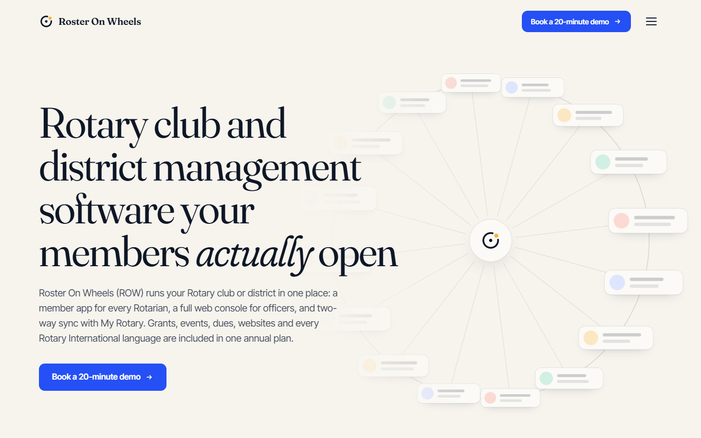

CONCEPT 01 · THE PRD'S OWN DIRECTION
Civic Editorial
A beautifully set newspaper with one moving idea: the wheel. Calm, premium and easy to read for every age.
- Signature
- Roster Wheel of member cards that collapses into the member app
- Type
- Fraunces + Inter Tight
- Colour